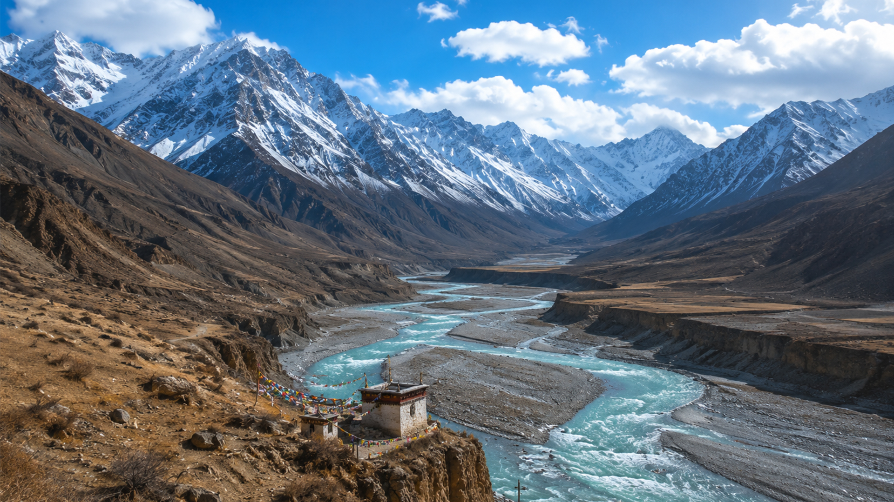
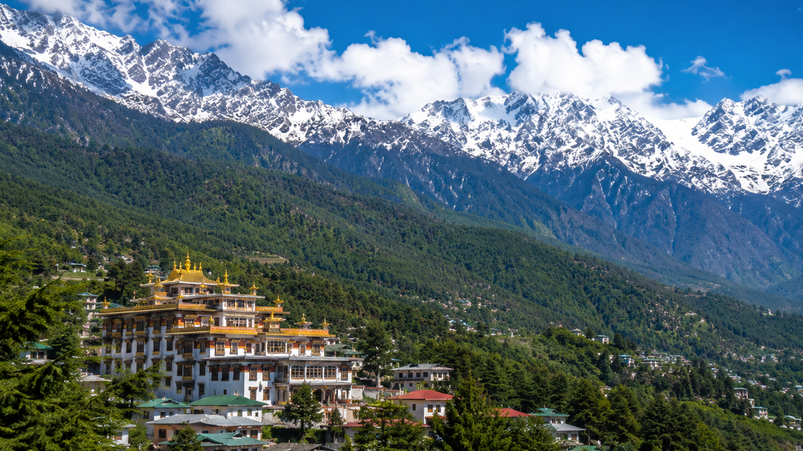
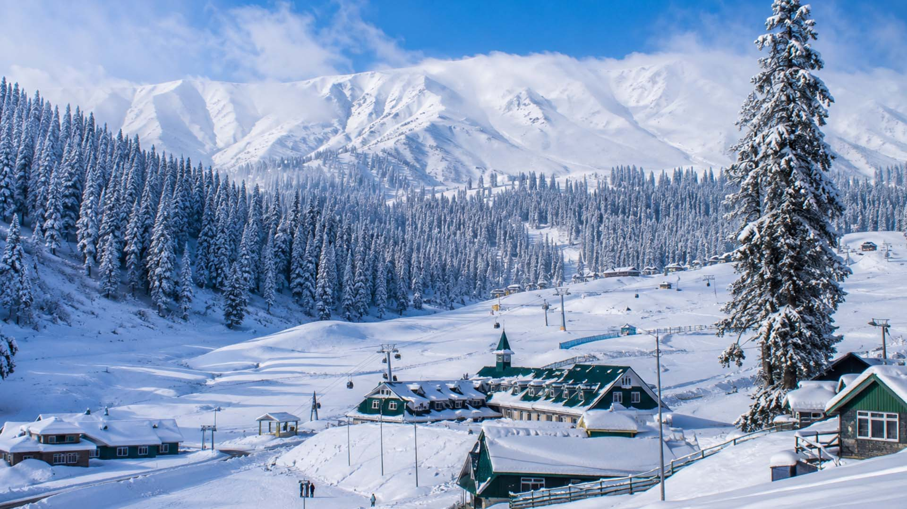

Ladakh is the highest plateau in India with most of it being over 3,000 m (9,800 ft).[22] It extends from the Himalayan to the Kunlun[71] Ranges and includes the upper Indus River valley. The confluence of the Indus (flowing left-to-right) and Zanskar (coming in from top) rivers. The Ladakh region has high altitude View of Leh Town Along with Stok Kangri Historically, the region included the Baltistan (Baltiyul) valleys (now mostly in Pakistani-administered Kashmir), the entire upper Indus Valley, the remote Zanskar, Lahaul and Spiti districts to the south, much of Ngari (including the Rudok region and Guge in the east), Aksai Chin in the northeast, and the Nubra Valley to the north, over Khardong La in the Ladakh Range. Contemporary Ladakh borders Tibet to the east, the Lahaul and Spiti regions to the south, the Vale of Kashmir, Jammu and Baltiyul regions to the west, and the southwest corner of Xinjiang, China across the Karakoram Pass in the far north. The historically vague divide between Ladakh and the Tibetan Plateau commences to the north in an intricate maze of ridges to the east of Rudok, including Aling Kangri and Mavang Kangri, continuing southeastward toward northwestern Nepal.

Dharamshala also spelled Dharamsala is a town in the Indian state of Himachal Pradesh. It serves as the winter capital[6] of the state and the administrative headquarters of the Kangra district since 1855.[7][8][9] Since 1960, the town has hosted the 14th Dalai Lama and the Tibetan government-in-exile. The town is located in the Kangra Valley, in the shadow of the Dhauladhar range of the Himalayas at an altitude of 1,457 metres (4,780 ft). Upper Dharamshala, located at an elevation of approximately 1,830 metres, is home to the official residence and headquarters of the 14th Dalai Lama. This area, which includes the well-known suburbs of McLeod Ganj and Forsyth Ganj, still reflects a distinctly colonial character, echoing its British-era legacy. In contrast, Lower Dharamshala, situated at around 1,380 metres, has evolved into a bustling commercial hub, serving as the town's primary centre for trade and business. The economy of the region is highly dependent on agriculture and tourism. The town is now a major hill station and spiritual centre. As of 2024, Dharamshala is the second most populous city in Himachal Pradesh, with a population of approximately 53,543, ranking only after the state capital

Gulmarg[a] (also known as Gulmarag,[4] lit.'meadow of flowers' in Kashmiri[5]) is a hill station and a notified area committee in Baramulla district of the Indian union territory of Jammu and Kashmir.[6][7] It is located in the Indian administered Kashmir, close to the Line of Control that serves as the de facto border between India and Pakistan. It is in the Pir Panjal Range in the Western Himalayas within the boundaries of the Gulmarg Wildlife Sanctuary.[8] Gulmarg is situated at an altitude of 2,650 m (8,690 ft), and is a popular tourist and skiing destination in the Kashmir Valley. Known as Gaurimarg (meaning "path of goddess Gauri") to the locals, it was renamed as Gulmarg by Yousuf Shah Chak, who ruled Kashmir from 1579 to 1586. The place served as a summer and recreational retreat during the Mughal rule in the 17th century, and British Raj in the 19th and early 20th centuries. The Gulmarg ski club was established in 1927. After the end of the British rule in the Indian subcontinent, it became part of the princely state of Kashmir and Jammu, which later acceded to India in October 1947. It was briefly captured by Pakistan during the Indo-Pakistani war of 1947-1948, before being retaken by the Indian Army. In 1948, the Indian Army established the High Altitude Warfare School in Gulmarg. In the 1960s, the Indian government promoted it as a tourist and winter sports destination. In the 1990s, the area was affected by insurgency, which impacted tourism, before its recovery in the 21st century.